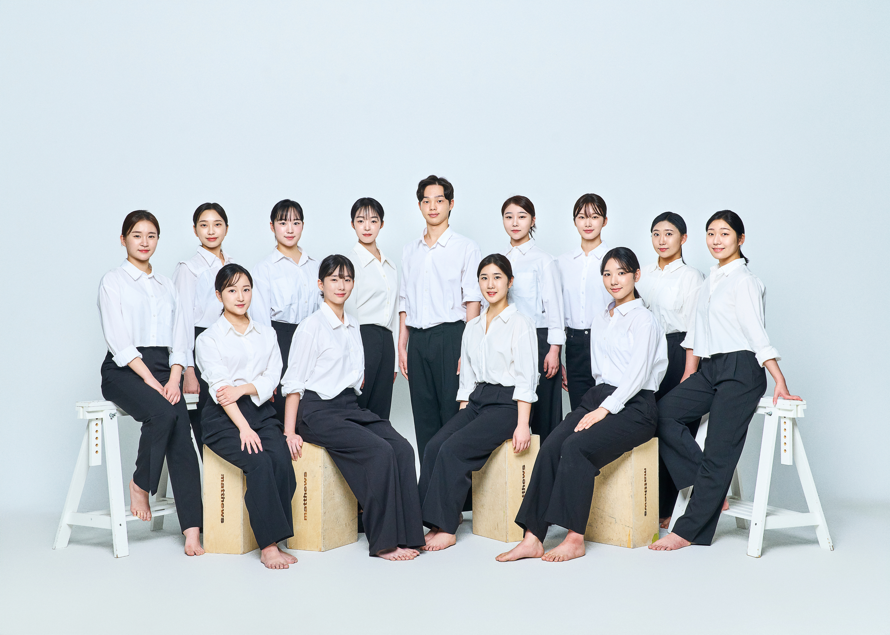

PERFORMANCE
한국무용Korean Dance
춘앵전 재구성
작품내용
조선 후기 순조시기에 효명세자가 순원왕후의 사순을 축하하는 노래를 예제하여 부르며 화문석 위에서 추는 춤으로 봄날 버드나무 가지 위에서 노래하는 꾀꼬리를 상징한 궁중정재 독무이다. 본 공연은 군무로 춘앵전을 재구성하였다.
- 음악 |
- 유초신지곡
- 출연 |
- 고예령, 김민서, 박효정, 수미노호노카, 신아영, 이현민, 임주은, 전수빈, 채지민, 최가은
무산향 재구성
작품내용
순조시기에 순조의 무병장수를 기원하며 효명세자가 예제한 창사를 부르며 높은 이동식 무대인 대모반 위에서 추는 춤으로 춘앵전과 더불어 궁중무용 독무이다.
본 공연은 군무로 무산향을 재구성하였다.
- 음악 |
- 표정만방지곡(향당교주)
- 출연 |
- 고예령, 김민서, 박효정, 수미노호노카, 신아영, 이현민, 임주은, 전수빈, 채지민, 최가은
